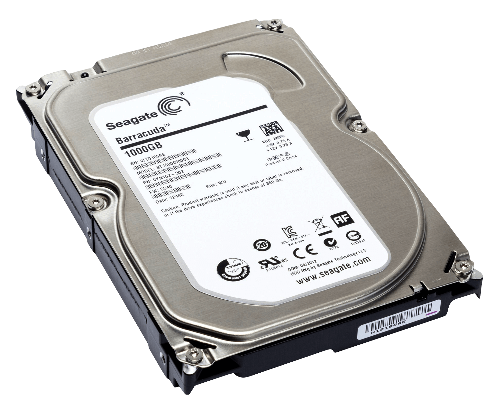
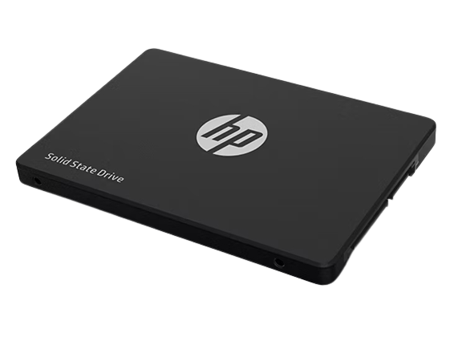

DEFINICION
Almacenamiento en disco es un método de guardar información de manera permanente en un dispositivo físico similar a un disco duro o una unidad de estado sólido (SSD). Funciona como la "memoria a largo plazo" de una computadora, donde los archivos, programas y datos se guardan incluso cuando la computadora está apagada. Es como tener un armario digital donde se almacenan todos tus archivos importantes.
CLASIFICACION
HDD (Disco Duro)
SSD (Unidad de Estado Sólido)
SSD Y HDD - DIFERENCIAS
Tecnología
Los HDD utilizan un disco magnético giratorio para almacenar datos, mientras que los SSD utilizan memoria flash.
Velocidad
Los SSD son mucho más rápidos que los HDD en términos de lectura y escritura de datos.
Ruido
Los HDD son más ruidosos que los SSD.
Vibraciones
Los HDD son más propensos a las vibraciones que los SSD.
Durabilidad
Los SSD son más duraderos que los HDD.
Consumo de Energía
Los SSD consumen menos energía que los HDD.
Costo
Los SSD son más caros que los HDD.
Tipo de Almacenamiento, Rendimiento y Tiempo de Arranque
El tipo de almacenamiento afecta al rendimiento y tiempo de arranque de una computadora de varias maneras.
En general, los dispositivos de almacenamiento más rápidos, como los SSD, ofrecen un rendimiento y tiempo de arranque más rápidos que los dispositivos de almacenamiento más lentos, como los discos duros.
Rendimiento
El rendimiento de una computadora se refiere a la velocidad a la que puede realizar tareas. El tipo de almacenamiento puede afectar el rendimiento de una computadora de varias maneras, incluyendo:
Velocidad de Lectura y Escritura
La velocidad de lectura y escritura de un dispositivo de almacenamiento es esencial para el rendimiento de una computadora. Cuando un dispositivo de almacenamiento es más rápido en leer y escribir datos, las aplicaciones se inician más rápidamente, los archivos se abren al instante y las transferencias de datos son más eficientes.
Latencia
La latencia es un factor crítico que afecta la capacidad de respuesta de una computadora. Los dispositivos de almacenamiento con baja latencia pueden responder a las solicitudes de lectura y escritura de manera casi instantánea. Esto es especialmente importante para tareas en tiempo real, como la edición de video o juegos, donde la demora en la respuesta puede causar problemas.
Banda Ancha
La banda ancha se refiere a la cantidad de datos que un dispositivo de almacenamiento puede transferir a la vez. En situaciones donde se requiere mover grandes cantidades de datos, como la edición de video de alta resolución o la transferencia de archivos grandes, un dispositivo de almacenamiento con mayor ancho de banda puede completar estas tareas de manera más eficiente.
Tiempo de Arranque
El tiempo de arranque es el tiempo que tarda una computadora en iniciarse. El tipo de almacenamiento puede afectar el tiempo de arranque de una computadora de varias maneras, incluyendo:
Carga del Sistema Operativo
La velocidad de lectura y escritura de un dispositivo de almacenamiento es esencial para el rendimiento de una computadora. Cuando un dispositivo de almacenamiento es más rápido en leer y escribir datos, las aplicaciones se inician más rápidamente, los archivos se abren al instante y las transferencias de datos son más eficientes.
Carga de Aplicaciones
Las aplicaciones son software diseñado para llevar a cabo tareas específicas en un computador. Cuando se utilizan dispositivos de almacenamiento más ágiles, se reduce el tiempo de carga de estas aplicaciones.
Como Elegir la Capacidad de Almacenamiento
La capacidad de almacenamiento es la cantidad total de datos que un dispositivo de almacenamiento puede contener. Se mide generalmente en bytes (por ejemplo, gigabytes o terabytes) y determina cuánta información, archivos y programas pueden almacenarse en ese dispositivo. Elegir adecuadamente la capacidad de almacenamiento depende de las necesidades y el uso previsto del dispositivo.
Algunas Consideraciones Clave:
Seguridad de Datos
La seguridad de datos es un tema fundamental cuando se trata de almacenamiento en disco, ya que la pérdida o el acceso no autorizado a datos sensibles pueden tener graves consecuencias.
Encriptación de Datos
- La encriptación es un proceso mediante el cual los datos se convierten en un formato ilegible (cifrado) para proteger su confidencialidad. En el almacenamiento en disco, esto significa que incluso si alguien obtiene acceso físico a la unidad, no podrá leer los datos sin la clave de desencriptación adecuada.
- Los discos duros y las unidades de estado sólido modernos a menudo ofrecen encriptación de hardware o software. La encriptación de hardware es más segura, ya que los datos se cifran directamente en la unidad sin pasar por la memoria de la computadora.
Protección contra Pérdida de Datos
- Las unidades de almacenamiento pueden fallar debido a diversas razones, como errores de hardware, fallos eléctricos o daños físicos. Para proteger contra la pérdida de datos, se utilizan estrategias de copia de seguridad y recuperación de datos.
- Las copias de seguridad regulares en unidades secundarias o en la nube son esenciales para asegurar que los datos críticos se puedan restaurar en caso de pérdida.
Borrado Seguro de Datos
- Cuando se desecha una unidad de almacenamiento, es importante realizar un borrado seguro de datos para garantizar que la información anterior no pueda recuperarse. Esto implica sobrescribir los datos múltiples veces o utilizar métodos de destrucción física.
Gestión de Contraseñas
- Las contraseñas son una capa adicional de seguridad. Para acceder a datos en un dispositivo de almacenamiento, se pueden utilizar contraseñas de acceso, contraseñas de encriptación y contraseñas de BIOS/UEFI.
Seguridad en el Acceso Físico
- Proteger físicamente las unidades de almacenamiento es esencial. Esto puede incluir el uso de cerraduras, cajas fuertes o la restricción de acceso a áreas de servidores o centros de datos.
Seguridad en la Nube
- Cuando se utiliza almacenamiento en la nube, se deben tomar medidas adicionales para garantizar la seguridad de los datos, como el uso de autenticación de dos factores y el cifrado de extremo a extremo
Actualizaciones de Firmware y Software
- Mantener actualizado el firmware y el software relacionado con el almacenamiento en disco es importante para corregir posibles vulnerabilidades de seguridad.